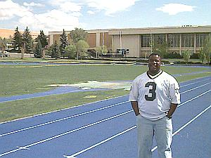

John Hart Building |
|
The John Hart Building is home of the Physical Education Department and all of the Viking varsity sports. This building includes an Olympic size swimming pool, an indoor track, weight rooms, racquetball courts, basketball courts and dance facilities. In addition, the Hart Gymnasium is used for such events as home basketball games, devotionals and concerts. |
 |